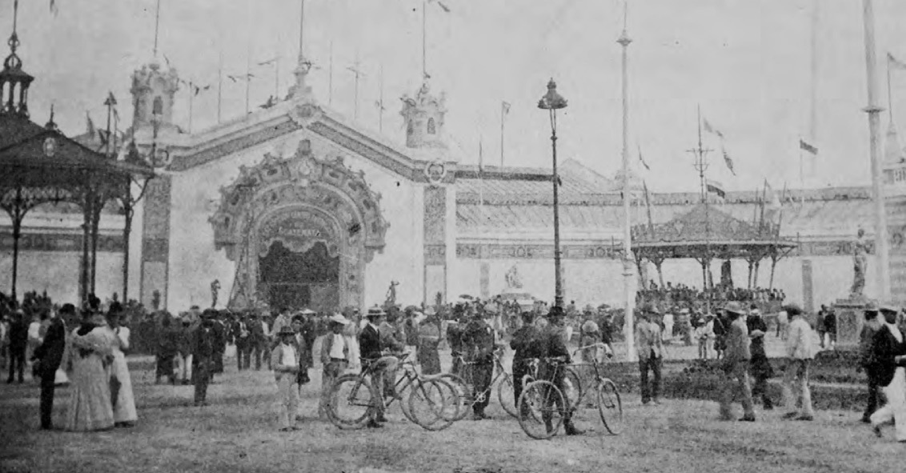

La Exposición Centroamericana fue una feria industrial y cultural celebrada en Guatemala en 1897, inspirada en las grandes exposiciones universales de la época, como la Exposición Universal de París de 1889.
Organizada bajo la presidencia de José María Reina Barrios, buscaba mostrar los avances de Guatemala y Centroamérica, promover el Ferrocarril Interoceánico y fortalecer lazos comerciales.
Leer más →
Duración del evento
Asistencia total
Ubicación en Ciudad de Guatemala
Las exposiciones universales del siglo XIX fueron plataformas para mostrar avances industriales, culturales y tecnológicos. Guatemala participó en eventos como París 1878, 1889 y Chicago 1893. La Exposición Centroamericana de 1897 fue un esfuerzo regional inspirado en estos grandes eventos.